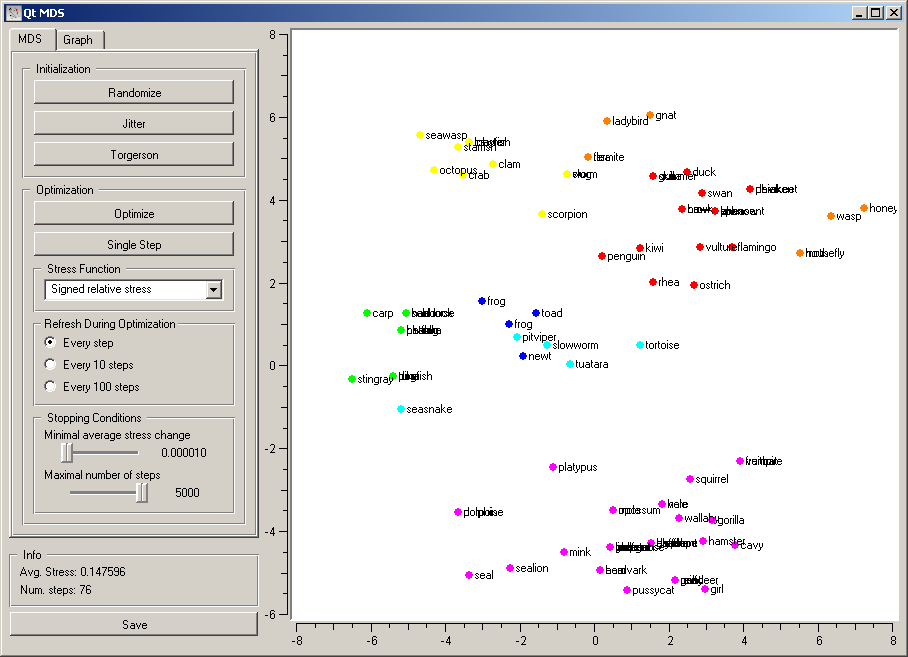
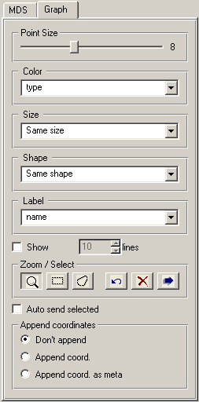
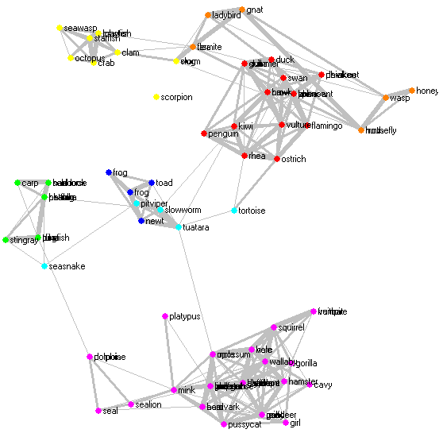
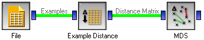

This is documentation for Orange 2.7. For the latest documentation, see Orange 3.
MDS¶
Multidimensional scaling (MDS) - a projection into a plane fitted to the given distances between the points
Signals¶
- Inputs:
- Distance Matrix
A matrix of (desired) distances between points
- Example Subset (ExampleTable)
A subset of examples to be marked in the graph
- Outputs:
- Selected Examples
A table of selected examples
Signals Example Subset and Selected Examples are only applicable if Distance Matrix describes distances between examples, for instance if the matrix comes from Example Distance.
Description¶
Multidimensional scaling is a technique which finds a low-dimensional (in our case a two-dimensional) projection of points, where it tries to fit the given distances between points as well is possible. The perfect fit is typically impossible to obtain since the data is higher dimensional or the distances are not Euclidean.
To do its work, the widget needs a matrix of distances. The distances can correspond to any kinds of object. However, the widget has some functionality dedicated to distances between examples, such as coloring the points and changing their shapes, marking them, and outputting them upon selection.
The algorithm iteratively moves the points around in a kind of simulation of a physical model: if two points are too close to each other (or too far away), there is a force pushing them apart (together). The change of the point’s position at each time interval corresponds to the sum of forces acting on it.
The first group of buttons set the position of points. Randomize sets the to a random position; the initial positions are also random. Jitter randomly moves the points for a short distance; this may be useful if the optimization is stuck in a (seemingly) local minimum. Torgerson positions the points using Torgerson’s method.
Optimization is run by pushing Optimize. Single Step makes a single step of optimization; this is primarily useful for educative purposes.
Stress function defines how the difference between the desired and the actual distance between points translates into the forces acting on them. Several are available. Let current and desired be the distance in the current projection and the desired distances, and diff=current-desired. Then the stress functions are defined as follows:
- Kruskal stress: diff2
- Sammon stress: diff2/current
- Signed Sammon stress: diff/current
- Signed relative stress: diff/desired
The widget redraws the projection during optimization. It can do so at Every step, Every 10 steps or Every 100 steps. Setting a lower refresh interval makes the animation more visually appealing, but can be slow if the number of points is high.
The optimization stops either when the projection changes only minimally at the last iteration or when a specified number of steps have been made. The two conditions are given with options Minimal average stress change and Maximal number of steps.
The bottom of the settings pane shows the average stress (the lower the better) and the number of steps made in the last optimization.
The second tab with settings defines how the points are visualized and the settings related to outputting the data. The user can set the size of points (Point Size) or let the size depend on the value of some continuous attribute (Size) of the example the point represents. The color and shape of the point (Color, Shape) can depend upon values of discrete attributes. Any attribute can serve as a label.
These options are only active if the points represents examples (that is, if there is a table of examples attached to the distance matrix on the widget’s input). If the points represent attributes (e.g. the distance matrix comes from Attribute Distance, the points can be labeled by attribute names. If the points come from a labeled distance file (see Distance File, the labels can be used for annotating the points.
The widget can superimpose a graph onto the projection, where the specified proportion of the most similar pairs is connected, with the width of connection showing the similarity. This is enabled by checking Show similar pairs and setting the proportion of connected pairs below. Enabling this option during the optimization can illustrate how the algorithm works, though drawing too many connections at each refresh can make the optimization very slow. The picture below shows a rendering of the zoo data set with this option enabled.
The remaining options deal with zooming selecting the points and sending them on. The magnifying glass enables zooming, and the other two icons enable selection of examples with rectangular or arbitrary selection areas. The buttons in the left group undo the last action, remove all selection and send the selected examples. Sending the examples can be automatic if Auto send selected is checked.
The output data can have the coordinates of each point appended, either as normal attributes (Append coordinates) or as meta attributes (Append coordinates as meta).
The MDS graph performs many of the functions of the visualizations widget. It is in many respects similar to the Scatter Plot, so we recommend reading its description as well.
Examples¶
The above graphs were drawn using the following simple schema.
